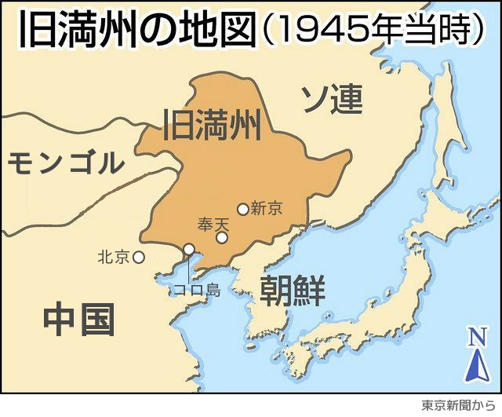

昭和二十年(一九四五)八月十五日、長かった戦争の終わったことを実感したのは、空襲の無くなった日本内地に住んでいた人たちであったろう。
しかし、旧満洲に住んでいた日本人は、あの八月十五日を境に引き揚げまでの歳月を、戦争中より惨めで、苦しく、不安な生活を送らざるを得ませんでした。
一九四三年、私は二十四歳で、旧満洲国政府文教部(日本の文部省)に勤める人の元に嫁ぎました。
当時、日本では毎日の様に召集令が出て男性は戦地に送られていましたが、外地の日本人には召集が無いと言われ、また旧満州に嫁ぐ女性を「大陸の花嫁」と政府が奨励し称賛していたのです。
父は大反対だったのですが、召集が無いとの事を母が納得し嫁ぐことになりました。
首都、旧新京(現在の長春)はここが外地かと疑うほど日本人で溢れ、配給の物資も豊富でした。
一九四四年五月長女に恵まれました。が翌年、長女の初誕生日を迎えようとしていた五月十五日、思いもしなかった召集令が来て、夫は出征して行きました。
この五月の召集は「根こそぎ召集」と汚名を残した関東軍の戦略で、北辺国境の開拓団員までも狩り出す政策をとったのです。
当時、私の兄が同じ満洲で鉄道警護隊の旧奉天本部に勤務しており、その兄の元に実家の父が「新京に残された妹親子を兄の家に引き取るように」と、依頼の手紙を寄こしてくれました。
六月末兄が迎えに来てくれ、奉天(現在の瀋陽)郊外の兄の官舎に引っ越し世話になった事で、私達親子は引き揚げの日まで、飢えることも無く過ごすことが出来ました。

兄の家に移ってから、どうも体調がすぐれないので医者に診て貰うと、妊娠との診断でした。
病気では無いので安心はしたのですが、診察の医師はこの時代では考えられないことを私に言ったのです。
「日本はこの戦争には負けますよ。貴女のおなかの子は、これから育つばかりで大変だと思います。私は数日後に出征します。生きて帰ることは出来ないと思います。ちょうど私の妻も妊娠していたのです。戦況が最悪になった時、妻が生きて行かれる手段として、今私だから出来る方法をとりました。法を犯して堕胎手術の道をとりました」と言ったのです。
「ご主人が出征した貴女にもそうしてあげたい、上に子供さんもいることですし、最悪の事態になっても生きて行くために、身軽になった方がいいのではないですか、今なら手術が出来るのです」と、出征間近な医師が堕胎手術を、違法を承知で勧めて下さるのです。
戦況が悪いと言っても、私には未だ切実にそれが読めませんでした。戦争に負けるということを肌で知ったのは僅か一ヶ月後です。
「先生のご親切なお心は充分に解り、本当に有り難く思います。でも私の意志で自分の子の命を絶つことには決心がつきかねます。それにご迷惑をかけることになっても」と、辞退して帰宅しました。
八月十四日は兄が宿直で留守をしており、家には兄嫁と四歳、一歳の姪に私達親子の五人だけでした。 翌十五日の夜半に官舎の回りで鋭い銃声が二、三発聞こえたため不安で眠ることも出来ません。朝になりほっとした時、現地の日本人会から、正午の放送を聞くように、と連絡があり、そして日本の敗戦を知りました。
兄嫁はすぐに兄の勤務先の警護隊に電話をかけましたが、もはや電話線は切られ連絡はとれません。
続いてまた日本人会から、「現地人の動きが不穏だから奉天市内に避難する。鉄道も使えない状況なので、馬車を二台用意したから十二時半迄に広場に集合せよ、荷物は持つな」との連絡なのです。
戦争に負けた、すぐ避難するとの事態に動転してしまいました。兄嫁は下の娘を背負い、普段兄から預かっている鞄だけ持ちました。
私は娘を背負い、四歳の姪の手を引き広場に走ると、もう近くの官舎の人が乗り込んでいて、何と沢山の荷物を抱えている有様です。先に乗った兄嫁に姪と私の娘を抱き取って貰い、続いて乗ろうとしたのですが、荷物が一杯で這い上がる事が出来ずにいるうちにもう馬車は走り出してしまいました。慌てて二台目の馬車にしがみつき引っ張り上げて貰う有様でした。
いつの間に集まっていたのか薄笑いを浮べた現地人が見ています。馬車が走り出した行く先にも現地人が群がっていて、荷物を取ろうと手を伸ばし、鉄の熊手などで引きずり落そうとするのです。
馬車の上は悲鳴と怒声と泣き声で埋まり、私は頭を抱えていましたが、兄嫁に預けた娘が心配で様子を見たくとも頭も上げられません。
御者が大声で鞭を振り回し馬を走らせ、奉天駅の警護隊に走り込んだ時には、馬車の上の荷物はほとんど無くなっていました。
敗戦と同時に立場が逆転した現地人は市内の至る所で暴動を始め危険な状態となったのです。警護隊の人たちは「待っていた」と言って、すぐに大きな鉄の門扉を何人もで閉ざしました。
あと二分遅かったら、馬車は門内に入れずに、私たちの生命もどうなっていたかわかりません。何日も現地人の暴動が続いているうちに、ソ連軍(ロシア)の囚人部隊が先鋒として進駐して来たのですが、その傍若無人の行動に日本人は息を密めて過ごしました。
囚人部隊と交替したソ連軍の時には昼なら女性も外出できました。十月になり、少しずつソ連兵の姿が減ってきて代わりに毛沢東の率いる八路軍が入城してくるとの情報が入りました。
ソ連と同じ共産主義の軍隊ではまたどんな目に合うかと不安で、日本人同士暗黙のうちにそれぞれ死を覚悟しなければなりません。兄は、「いざの時には俺はピストルで自分の家族を始末する、だからお前はこれで自決してくれよ」と言って、長女を抱く私の手に手榴弾を握らせたのです。
その手榴弾は兄の手のぬくもりが残っていて、あたたかでした。
噂とは違って八路軍は軍律が厳しく、日本人を困らせる事はせず生活費を稼ぐための屋台店を出すことが出来活気づいて来ました。
秋も終り日増しに寒くなって来ましたが、八月十五日に身体ひとつで避難したため、出産のための用意はおむつの一枚も無いのです。
ある日兄が「官舎の奥さん方から頂いたよ」と大風呂敷に一杯の産着やおむつなど頂いて来て、本当に涙の出るほど嬉しく思いました。
ところが市内の医療施設の備材は、先に進駐したソ連軍が略奪し本国に送り出し、医者まで拉致して行ったので無医村状態でした。助産婦は姿を隠している有様でしたので兄は北満から逃避して来た開拓団の収容先をたずね歩きようやく助産婦を探しあてました。そのおかげで、十一月十五日に無事女の子を出産することが出来たのです。
一九四六年七月、引揚げることになりましたが、兄嫁は病気で兄の家族は病院船で帰国と決まり、私は一人で二歳の長女を背負い、七ヶ月の次女を胸に結え、両肩には兄が揃えてくれた非常食と着替えの衣類などの袋を提げました。
北奉天駅から無蓋貨車に乗せられて、引揚げ船の待つ錦州コロ島(中国・遼寧省の葫蘆島)に向かいました。宿舎は満員のため一晩は野宿するよりありませんでしたが、両脇の子はぐっすりとよく眠ってくれました。